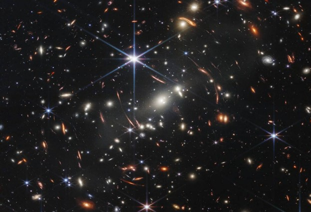

Prepare-se para o lançamento!
Ao menos uma única vez cada um de nós já parou para pensar o que é a imensidão azul
do dia ou da noite em nossas cabeças, e pensando nisso viemos com a sede e a ousadia
de demostrar o quão louca ou até mesmo capaz a nossa espécie é, fomos à lua,
explorando e descobrindo coisas inimagináveis.
Viemos aqui explicar como fomos tão longe. Prepare-se e preste muita atenção, após o final das
suas descobertas, perguntas serão feitas para demonstrar conhecimento e
entendimento sobre o assunto. Para os tópicos importantes para essas perguntas, será
posto um símbolo para identificação. (*).
Leia com precisão Cosmonauta! Erros são como buracos negros - podem engolir o sentido todo!
Durante sua leitura de descobertas, fique com a seguinte pergunta em mente: Será mesmo que o céu é o limite?Universo
O Universo é a totalidade do que existe: matéria, energia, espaço e tempo. Ele engloba todos os corpos celestes, como planetas, estrelas, galáxias e a própria estrutura do espaço entre eles. Loucura, não é?
Essencialmente, o universo é tudo, e tudo o que conhecemos faz parte dele.
Para entender melhor, e para os curiosos:
- Matéria e energia: O universo é composto por toda a matéria que conhecemos, desde a mais densa (estrelas e planetas) até a mais rarefeita (como espaço entre as galáxias). Além disso, inclui todas as formas de energia, como luz, calor e radiação.
- Espaço e tempo: O universo é o espaço onde tudo acontece, e o tempo é a dimensão que mede a sequência dos eventos.
- Corpos celestes: O universo abriga bilhões de galáxias, cada uma com suas estrelas, planetas, nebulosas e outros objetos celestes. Nossa galáxia, a Via Láctea, é apenas uma entre muitas.
- Expansão: O universo está em constante expansão, ou seja, o espaço entre as galáxias está aumentando. Essa expansão é um dos principais indícios da teoria do Big Bang que explica a origem do universo.
Planetas
Para início de conversa sobre esse tema, vamos cumprimentar os nossos vizinhos cósmicos:
O Sistema Solar
O sistema Solar é como uma grande "família" de planetas que giram em volta do Sol, nossa estrela. Ele surgiu há cerca de 4,6 bilhões de anos, a partir de uma nuvem gigante de gás e poeira no espaço. Essa nuvem começou a girar, se comprimir, e no centro nasceu o Sol. O que sobrou virou os planetas, luas, asteroides e cometas.
*Vamos conhecer os 8 planetas do sistema solar, em ordem de distância do Sol:
Mercúrio
- Tamanho: O menor planeta.
- Composição: Feito de rochas e metal (muito ferro).
- Ambiente: Muito quente de dia, muito frio à noite.
- Curiosidade: Não tem atmosfera direito, então o calor do Sol bate direto.
Vênus
- Tamanho: Quase do tamanho da Terra.
- Composição: Rochoso, com uma atmosfera densa de gás carbônico.
- Ambiente: Super quente (mais que Mercúrio!) por causa do efeito estufa.
- Curiosidade: Os dias em Vênus são mais longos que os anos!
Terra
- Tamanho: Médio.
- Composição: Rochoso, com água, ar e vida.
- Ambiente: Temperado, com atmosfera ideal para seres vivos.
- Curiosidade: É o único planeta com vida que conhecemos.
Marte
- Tamanho: Menor que a Terra.
- Composição: Rochoso, com solo rico em óxido de ferro (por isso é vermelho).
- Ambiente: Frio e seco, com tempestades de poeira.
- Curiosidade: Pode ter tido água líquida há bilhões de anos.
Júpiter
- Tamanho: O maior planeta do sistema solar.
- Composição: Gasoso, feito principalmente de hidrogênio e hélio, sem superfície sólida.
- Ambiente: Ventos violentos e tempestades como a Grande Mancha Vermelha.
- Curiosidade: Tem mais de 90 luas, incluindo a maior de todas: Ganimedes.
Saturno
- Tamanho: Segundo maior planeta do sistema solar.
- Composição: Gasoso, feito principalmente de hidrogênio.
- Ambiente: Ventos intensos e temperaturas baixíssimas.
- Curiosidade: Tem os anéis mais bonitos do sistema solar, feitos de gelo e pedras.
Urano
- Tamanho: Grande, mas menor que Saturno.
- Composição: Gelo, gás, e um pouco de rocha.
- Ambiente: Super frio e gira "de lado", ou seja, tem rotação inclinada em 98°!
- Curiosidade: A cor azul-esverdeada vem do gás metano.
Netuno
- Tamanho: Um pouco menor que Urano.
- Composição: Gelo e gás, também com muito metano.
- Ambiente: Extremamente frio e com ventos mais rápidos que qualquer planeta.
- Curiosidade: É o planeta mais distante do Sol.
Já que acabamos de cumprimentar nossos vizinhos, vamos limpar os pés e entrar em nossa casa:
Terra

A Terra é o terceiro planeta a partir do Sol e o único que, até hoje, sabemos que abriga vida, Ela tem cerca de 12.742 km de diâmetro e uma superfície coberta em 71% por água, o que a torna única entre os planetas do sistema solar. Sua atmosfera, rica em oxigênio e nitrogênio, ajuda a regular a temperatura e proteger a vida dos efeitos nocivos do Sol, como a Radiação intensa.
Uma das grandes curiosidades da Terra é o seu campo magnético, gerado pelo movimento de ferro e níquel no núcleo, que nos protege de partículas solares perigosas. Além disso, a lua, que é nosso satélite natural, tem um papel fundamental na Terra. Ela influencia as marés e estabiliza a rotação do planeta, evitando que ele oscile demais ao longo do tempo, o que ajudaria a manter o clima estável.
Em resumo, a terra não é só o nosso lar, mas um planeta cheio de características e processos únicos que fazem dela um lugar extraordinário no vasto universo.
Inacreditável a cada momento pensar que um longo processo evolutivo, com contribuições de muitos cientistas ao longo da historia foi necessário para chegar onde estamos hoje. Nicolau Copérnico com o modelo heliocêntrico, Galileu Galilei, com suas observações telescópicas, Johannes Kepler, com a formulação das leis de movimento planetário, Edwin Hubble com a expansão do universo, e não podemos esquecer de Tycho Brahe, Isaac Newton e Georges Lemaître, que fizeram contribuições muito importantes para a compreensão do universo e dos planetas.
Então, para não perdemos o que ainda não descobrimos foram criadas as agências espaciais ao redor do mundo, cada uma delas com seu foco e responsabilidade:
Agências Espaciais

*Principais Agências Espaciais:
- NASA(Estados Unidos): Administração Nacional de Aeronáutica e do Espaço é a agência espacial dos EUA, responsável por uma vasta gama de atividades, incluindo exploração espacial, pesquisa científica e desenvolvimento tecnológico.
- ESA(Agencia Espacial Europeia):É uma organização intergovernamental composta por vários países europeus, com o objetivo de coordenar e promover atividades espaciais em nível europeu.
- ROSCOSMOS(Rússia):A Agência Espacial Federal Russa é a agência responsável por lançamentos espaciais, pesquisa e exploração.
- JAXA(Japão):Agência de Exploração Aeroespacial do Japão é focada em pesquisa e desenvolvimento espacial, incluindo missões e exploração e tecnologia de satélites.
- ISRO(Índia):A organização de Pesquisa Espacial Indiana é responsável por projetos de exploração espacial, lançamentos de satélites e desenvolvimento tecnológico.
- CNSA(China): A Administração Espacial Nacional da China é responsável por programas espaciais e exploração.
- CNES(França):Agência Espacial Francesa.
- AEB(Brasil):Agência Espacial Brasileira.
- UKSpaceAgency(Reino Unido):Agência Espacial do Reino Unido.
- AEM(México):Agência Espacial Mexicana.
- SANSA(África do Sul):Agência Espacial Nacional Sul-Africana
- UAESA(Emirados Árabes Unidos):Agência Espacial dos Emirados Árabes Unidos.
Além das principais, muitas outras agências espaciais nacionais desempenham papéis importantes, como:
Cada ideia foi um ponto de partida, então, que tal falarmos e conhecermos um ponto de partida grande agora?
Foguetes
*Como os Foguetes Espaciais Foram Criados?
A ideia de foguetes não é nova. Ela nasceu na China antiga, por volta do século XIII, com a invenção da pólvora. Os primeiros "foguetes" eram basicamente flechas com tubos cheios de pólvora presos a elas, usados em festivais e como armas. Imagine só a surpresa dos inimigos quando viam essas flechas voadoras indo na direção deles!
Com o tempo, as pessoas começaram a pensar em como usar essa tecnologia para ir mais longe. É quase como aquela frase de StarTrek: "Audaciosamente indo onde nenhum homem jamais esteve". Mas foi só no início do século XX que alguns gênios começaram a transformar a ficção científica em realidade:
- Kontstantin Tsiolkovsky (Rússia): Ele é considerado o "pai da astronáutica". No final do século XIX e início do século XX, ele desenvolveu as equações que descrevem o movimento de foguetes e propôs o uso de propelentes líquidos, algo revolucionário para a época.
- Robert Goddard (EUA): Em 1926, ele lançou o primeiro foguete movido a propelente líquido (é uma substância, geralmente um combustível e um oxidante, que é usada para gerar empuxo através da combustão), da história. Era pequeno, voou por poucos segundos, mas foi um passo gigantesco.
- Ele também fez contribuições importantes para a teoria de foguetes, desenvolvendo a Teoria do Voo Espacial e o conceito de foguetes de múltiplos estágios, inspirando muitos engenheiros.
A grande virada aconteceu durante a Segunda Guerra Mundial, quando a Alemanha desenvolveu o foguete V-2. Embora fosse uma arma, ele foi o primeiro míssil balístico de longo alcance e abriu o caminho para a exploração para a exploração espacial. Muitos cientistas que trabalharam no V-2 foram para os EUA e a União Soviética depois da guerra, e eles foram cruciais na corrida espacial.
O Foguete mais importante já feito:

O Saturno V é, sem dúvida, um dos mais icônicos e importantes da história. Ele foi projetado e construído pela NASA nos EUA e usado no Programa Apollo para levar astronautas à Lua entre 1969 e 1972. Pense em algo do tamanho de um prédio de 36 andares, pesando quase 3 milhões de quilos no lançamento. É muita coisa. O Saturno V foi o foguete mais poderoso já construído e usado com sucesso para voos espaciais tripulados. Ele não só levou os primeiros humanos de superar desafios incríveis. Sem ele, a humanidade não teria pisado em outro corpo celeste.
A Física por trás dos Foguetes
*A ideia central do funcionamento de um foguete é a Terceira Lei de Newton: Ação e Reação.
Imagine que você está parado e dá um salto, empurrando o chão com força para baixo. O que acontece? Você se move para cima, certo?
Com um foguete é a mesma coisa:
- Ação: O foguete expele gases em alta velocidade para baixo. Esses gases são o resultado da queima de combustíveis (propelente). Pense neles como a "força para baixo" que o foguete está aplicando.
- Reação: Como reação a essa força para baixo, o foguete é empurrado para cima. É essa força de empuxo que o tira do chão e o leva para o espaço.
A quantidade de empuxo que um foguete gera depende de duas coisas principais:
- Massa dos gases expelidos: Quanto mais massa de gases ele joga para fora por segundo, maior o empuxo.
- Velocidade de saída dos gases: Quanto mais rápido os gases são expelidos, maior o empuxo.
É por isso que os foguetes usam motores muito potentes para queimar muito propelente e jogar esses gases para fora em velocidades altíssimas.
Os tipos de Energia em um Foguete:
Agora, vamos falar de energia, que é a capacidade de realizar trabalho, e cinemática que estuda o movimento dos corpos sem se preocupar com as causas (as forças). Elas estão super conectadas no voo de um foguete:
- Energia Química (no Combustível): No início, a maior parte da energia está "armazenada" quimicamente no propelente do foguete (o combustível e o oxidante). É como a energia da gasolina no tanque de um carro. Essa energia é liberada quando o combustível queima.
- Transformação em Energia Térmica e Cinética (nos Gases): Quando o propelente queima dentro dos motores, a energia química se transforma em energia térmica (calor). Esse calor faz com que os gases de escape se expandam rapidamente e sejam expelidos em altíssimas velocidades pela tubeira do foguete. Ou seja, essa energia térmica se transforma em energia cinética dos gases. Pense em uma panela de pressão: o vapor quente (energia térmica) escapa em alta velocidade (energia cinética).
- Transferência de Energia Cinética (para o Foguete): É aqui que a Terceira Lei de Newton entra novamente! A energia cinética dos gases sendo empurrados para baixo gera o empuxo que impulsiona o foguete para cima. Essa força faz com que o foguete comece a se mover e ganhar velocidade, o que significa que ele está ganhando energia cinética.- Energia Cinética é a energia que um objeto tem por estar em movimento. Quanto mais pesado e mais rápido o foguete, maior sua energia cinética. A fórmula é : E =m.v2 2
- Ganhando Energia Potencial Gravitacional: À medida que o foguete sobe, ele está se afastando da Terra e, portanto, ganhando altura. Isso significa que ele está acumulando energia potencial gravitacional. Essa é a energia que um objeto tem devido à sua posição em um campo gravitacional (no caso, o da Terra). Quanto mais alto ele está, mais energia potencial gravitacional ele tem.-Energia Potencial Gravitacional é a energia armazenada devido à altura. A fórmula é: Epg = m.g.h
- Em resumo:A energia química do combustível se transforma em energia térmica e depois em energia cinética dos gases, que por sua vez, impulsionam o foguete, dando-lhe energia cinética para se mover e energia potencial gravitacional para subir. Todo esse processo é uma série de transformações de energia.
Curiosidades que você vai gostar:
- Foguetes de Múltiplos Estágios: Para chegar ao espaço, os foguetes são divididos em várias partes chamadas estágios. Quando o combustível de um estágio acaba, ele se desconecta e cai (geralmente no oceano), tornando o foguete mais leve. Isso permite que os estágios restantes continuem acelerando com menos massa para empurrar. É como descartar uma mochila pesada depois de subir uma parte da montanha.
- A Atmosfera é um problema: A parte mais difícil do lançamento é passar pela atmosfera terrestre. Ela causa muito atrito (arrasto), que desacelera o foguete e gera calor. Por isso, os foguetes são projetados de forma aerodinâmica e são incrivelmente potentes para vencer essa resistência.
- Reutilização: Hoje em dia, empresas como a SpaceX estão revolucionando a indústria espacial com foguetes reutilizáveis. Em vez de descartar os estágios depois do lançamento, eles pousam de volta na Terra e podem ser usados novamente. Isso torna as viagens espaciais muito mais baratas e sustentáveis.
- Combustível: Os foguetes não usam gasolina comum. Eles usam propelentes especiais que podem ser líquidos (como oxigênio líquido e querosene ou hidrogênio líquido) ou sólidos (quase como pólvora, mas muito mais potente). A escolha depende do tipo de foguete e da missão.
- Velocidade de Escape: Para sair da Terra e não cair de volta, um foguete precisa atingir uma velocidade de aproximadamente 40.270 km/h (25.000 milhas por hora). Isso é conhecido como velocidade de escape.